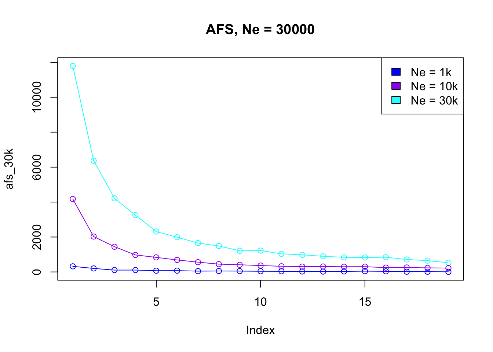
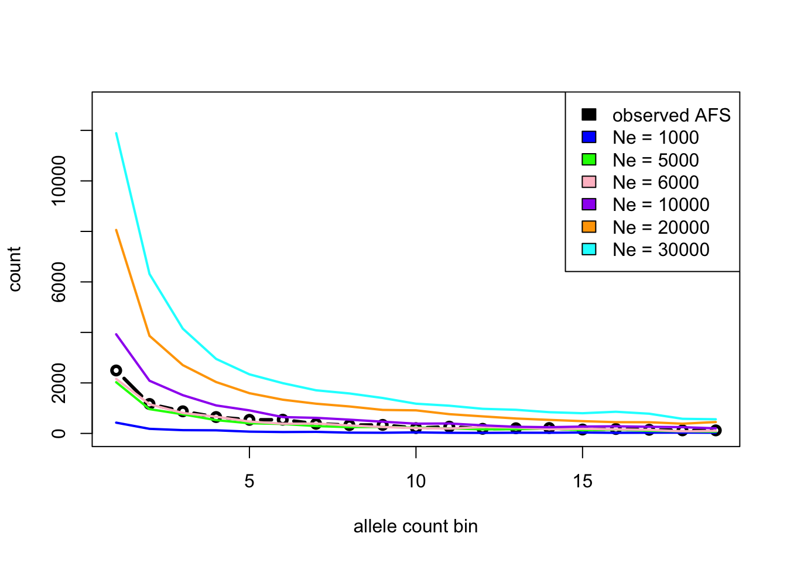
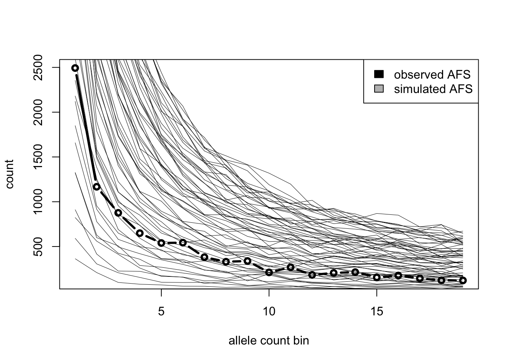
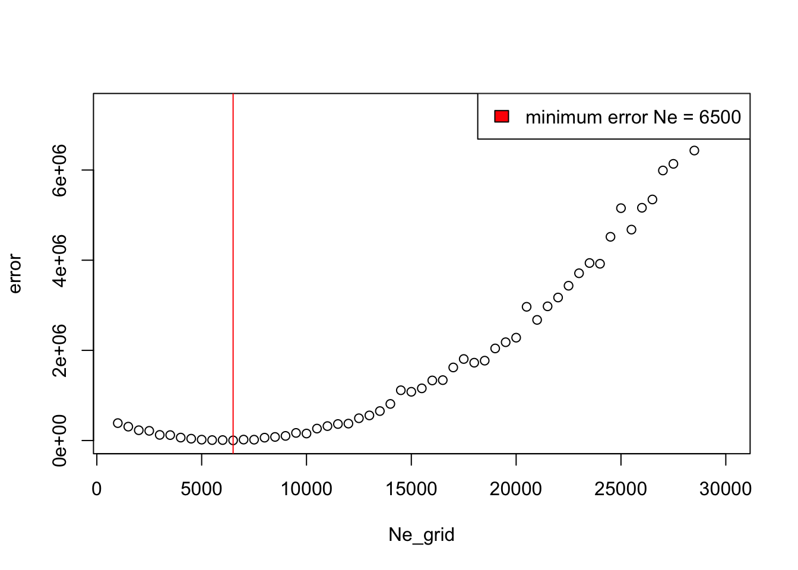
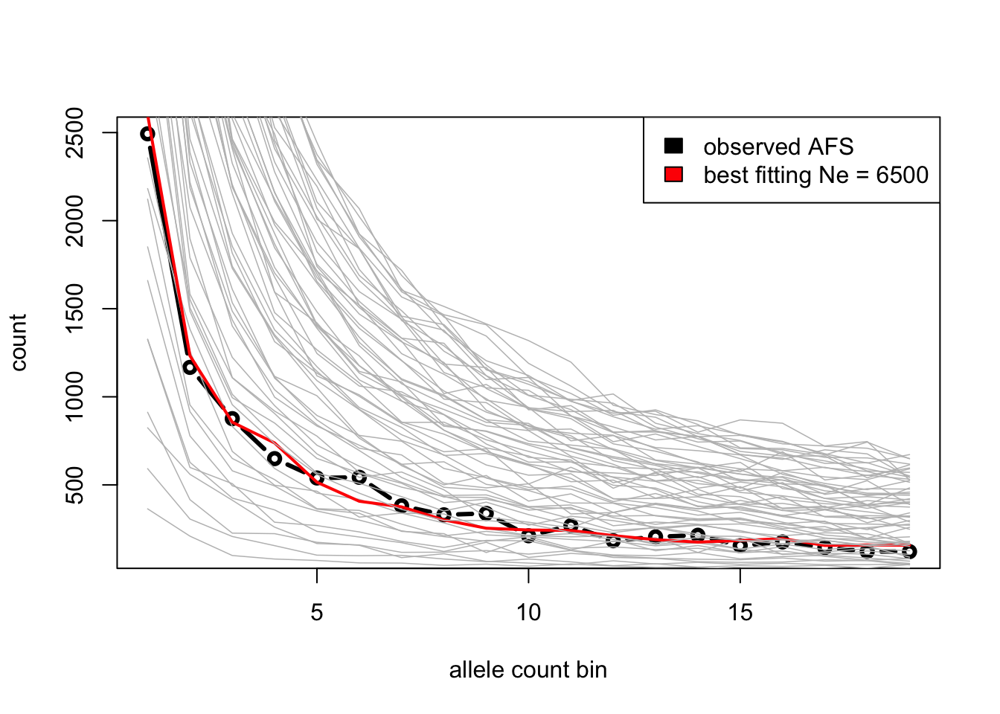

Imagine you sequenced 1 Mb of sequence of ten individuals from a population of your interest and computed a summary statistic such as the allele frequency spectrum (AFS). Those sequences (and, by extension, the AFS) were produced by a real-world biological process (demographic history) which is hidden but which you want to learn about. Prior bioinformatic studies estimated that the recombination and mutation rates of this population are both 1e-8 (just like in humans).
Now you want to use this data to estimate the population’s long-term \(N_e\) which is, of course, unknown (you only have the observed AFS). Suppose that the only thing known about the population size from some other hypothetical evidence that this \(N_e\) was somewhere between 1000 and 30000.
(\(N_e\) is just an example here—in practice, we’re typically interested in other parameters as well (admixture rate, admixture time, split times, etc.), but the idea remains the same: we computed summaries of the empirical data which were shaped by those hidden parameters and we need to estimate them.)
Simulations can be a great tool to estimate the most likely value of such an unknown parameters. In this exercise, you’re going to simulate a large number of AFS vectors (each resulting from a different assumed \(N_e\) value) and then pick just those \(N_e\) values (or just one \(N_e\) value) which produced a simulated AFS closest to the observed AFS. This is the core idea behind simulation-based inference and applies to many other situations and modeling contexts.
To make things manageable, let’s decompose the problem into a sequence of steps.
Part 1: A self-contained data-generating slendr function
Create a new script inference_afs.R. In this script, program a function called simulate_afs(), which will take Ne as its only parameter and will contain a single-population slendr demographic model. In this function, use ts_afs() to compute (and return) the AFS vector on a sample of 10 individuals in the tree sequence produced by this model. When you return the AFS vector from this function, make sure to drop the first and last elements (with something like afs[-c(1, 21)]). Test this function on a couple of Ne values of your choosing, but staying between Ne = 1000 and Ne = 30000 and plot them to observe how (and why) do they differ based on Ne parameter you used in each respective simulation. If you want more information about AFS, see the help page under ?ts_afs.
Hint: If you need help, take a look at the exercise chapter which introduced the concepts of slendr model functions generating some statistics, or feel free to start building your inference_afs.R solution based on the following “template” (just fill in missing relevant bits of slendr code that you should be already familiar with).
Note: If you want to know why I asked you to drop the first and last element of the ts_afs() output (for instance with something like afs[-c(1, 20)]), it’s due to technical reasons related to how the underlying tskit module operates. You don’t have to worry about that here, but you can read this for more detail.
NoteClick to see the “template”
library(slendr)init_env()simulate_afs <-function(Ne) {# In here you should write code which will:# 1. create one population with a given Ne (provided as a function argument)# 2. compile the model (either forward-time or backward-time, doesn't matter)# 3. simulate a tree sequence# 4. select a subset of 10 individuals (you could also schedule ther recording)# 5. compute AFS vector from those 10 individuals using `ts_afs()`# `result` is a variable with your 10-sample AFS vector (we remove the# first and last element because it's not meaningful for our example)return(result[-c(1, 21)]) }# test the function on a few example runsafs1k <-simulate_afs(Ne =1000)plot(afs1k, type ="o")afs7k <-simulate_afs(Ne =7000)plot(afs7k, type ="o")
When used in R, your custom function should work like this (the simulation is stochastic, so your numbers will be different, of course):
In summary, your function should give you a vector of singletons, doubletons, etc., all the way to the number of fixed mutations in our sample of 10 individuals, looking something like this:
The point of the exercise is for you to force yourself to push through the frustration. These case studies were designed to put you in a situation in which you have to address a research problem without a known solution and let you practice this in a safe environment. Please, only take a look at the solution if you’re either done with your own code, or if you want to compare your solution to mine:
NoteClick to see the solution
Here’s the complete script inference_afs.R so far:
library(slendr)init_env()simulate_afs <-function(Ne) {# create a slendr model with a single population of size Ne = N pop <-population("pop", N = Ne, time =1000) model <-compile_model(pop, generation_time =1, direction ="backward") schedule <-schedule_recording(model, times =0, list(pop, 10))# simulate a tree sequence ts <-msprime(model, sequence_length =10e6, recombination_rate =1e-8, schedule = schedule) %>%ts_mutate(mutation_rate =1e-8)# get the names of the 10 individuals in the tree sequence samples <-ts_names(ts)# compute the AFS vector afs <-ts_afs(ts, sample_sets =list(samples))# return the AFS (without the first and last element)return(afs[-c(1, length(afs))])}
Our function is supposed to produce an AFS vector of counts of alleles observed at a given frequency in the population sample. Let’s verify that our custom function works correctly by simulating an AFS vector for Ne = 1k, 10k, and 30k:
To see the results of this function in a clearer context, let’s visualize the vectors in the same plot:
plot(afs_30k, type ="o", main ="AFS, Ne = 30000", col ="cyan", ylim =c(0, max(afs_30k)))lines(afs_10k, type ="o", main ="AFS, Ne = 10000", col ="purple")lines(afs_1k, type ="o", main ="AFS, Ne = 1000", col ="blue")legend("topright", legend =c("Ne = 1k", "Ne = 10k", "Ne = 30k"),fill =c("blue", "purple", "cyan"))

Part 2: Matching simulated AFS against empirical AFS
This is the empirical AFS you computed from the 10 sequenced genomes of your individuals of interest (perhaps with software like PLINK):
Now use your slendr function simulate_afs() and a few other techniques you learned throughout this workshop to “guess” the true (but hidden) \(N_e\) of your population of interest, given this observed AFS. Depending on how confident you feel with coding, there are two possible options:
Option 1 [easy but not rigorous]: Plot AFS vectors simulated for various \(N_e\) values, then try to guess (just by looking at the AFS visualizations) which one looks closest to the empirical AFS and, therefore, which simulated \(N_e\) is the closest match to the reality. (This is, of course, not how proper statistical inference is done, but it’s a good start if you’re just starting with simulation-based inference.)
Option 2 [harder and more rigorous]: Simulate AFS vectors across a grid of possible Ne values depending on your prior information (perhaps using base R lapply() or purrrmap()), and find the \(N_e\) which results in a simulated AFS which is closest to the observed AFS by computing Mean squared error on the two of them.
NoteClick to see the solution to “Option 1”
This is the empirical AFS to which we need to compare our simulated AFS vectors:
We know that the true \(N_e\) is supposed to be between 1000 and 30000, so let’s simulate a couple of AFS vectors for different \(N_e\) values using our new AFS simulation function:
Now let’s plot our simulated AFS vectors together with the observed AFS (shown in black):
plot(afs_observed, type ="b", col ="black", lwd =3,xlab ="allele count bin", ylab ="count", ylim =c(0, 13000))lines(afs_Ne1k, lwd =2, col ="blue")lines(afs_Ne5k, lwd =2, col ="green")lines(afs_Ne6k, lwd =2, col ="pink")lines(afs_Ne10k, lwd =2, col ="purple")lines(afs_Ne20k, lwd =2, col ="orange")lines(afs_Ne30k, lwd =2, col ="cyan")legend("topright",legend =c("observed AFS", "Ne = 1000", "Ne = 5000","Ne = 6000", "Ne = 10000", "Ne = 20000", "Ne = 30000"),fill =c("black", "blue", "green", "pink", "purple", "orange", "cyan"))

From the figure, we can see that the black line (empirical AFS) seems to be closest to the simulated \(N_e\) = 6000.
And indeed, I can now reveal that the true \(N_e\) of our population of interest was 6543. Not a bad result for such a simple inference pipeline!
Having done the “Option 1” solution, now consider taking a stab at the “Option 2”. It’s not that much harder, actually, and you’ve already practiced everything you need to solve this. You’ve got this!
NoteClick to see the solution to “Option 2”
This is the empirical AFS to which we need to compare our simulated AFS vectors:
We know that the true \(N_e\) is supposed to be between 1000 and 30000. Let’s generate a regular grid of potential \(N_e\) values for which we want to simulate AFS vectors:
Ne_grid <-seq(from =1000, to =30000, by =500)Ne_grid
With the parameter grid Ne_grid set up, let’s simulate an AFS from each \(N_e\) model (we simply loop over the grid using a parallel version of lapply() to speed things up, but plain lapply() or map() would work too):
Here’s an example of the first five simulated AFS vectors, just to demonstrate what the output of the grid simulations looks like. As you can see, we get a list of numerical vectors, one element of the list corresponding to one AFS (and indexed by the corresponding Ne):
To get a better idea of the grid simulations, let’s visualize the observed AFS (in black) and overlay the simulated AFS vectors on top of it (in gray):
# plot the observed AFS in blackplot(afs_observed, type ="b", col ="black", lwd =3, xlab ="allele count bin", ylab ="count")# then loop over the list with simulated AFS, overlaying them onto the plotfor (i inseq_along(Ne_grid)) {lines(afs_grid[[i]], lwd =0.5)}# add a legend toolegend("topright", legend =c("observed AFS", "simulated AFS"), fill =c("black", "gray"))

Instead of just eyeballing the closest AFS like we do in “Option 1” (which is impossible to do here anyway because of how many AFS vectors we simulated), we want to compute the mean squared error of the AFS produced by each \(N_e\) value across the grid:
# loop over simulated AFS vectors and compute the MSE from the observed AFS for eacherror_grid <-sapply(afs_grid, function(afs_simulated) {sum((afs_simulated - afs_observed)^2) /length(afs_simulated)})
Let’s visualize the error of each simulated AFS and highlight the one which was closest to the empirical AFS:
plot(Ne_grid, error_grid, ylab ="error")abline(v = Ne_grid[which.min(error_grid)], col ="red")legend("topright", legend =paste("minimum error Ne =", Ne_grid[which.min(error_grid)]), fill ="red")

Plot the AFS again, but this time highlight the AFS which is the most statistically likely (i.e. the one which gave the lowest MSE value):
# plot the observed AFS againplot(afs_observed, type ="b", col ="black", lwd =3, xlab ="allele count bin", ylab ="count")# loop over each simulated AFS...for (i inseq_along(Ne_grid)) {# ... and assign a red color to the one which was the closest based on# the computed error from the observed AFS color <-if (i ==which.min(error_grid)) "red"else"gray" width <-if (i ==which.min(error_grid)) 2else0.75lines(afs_grid[[i]], lwd = width, col = color)}legend("topright", legend =c("observed AFS", paste("best fitting Ne =", Ne_grid[which.min(error_grid)])),fill =c("black", "red"))

The true \(N_e\) was 6543, which fits our inference result very well!
Congratulations, you now know how to infer parameters of evolutionary models using simulations! What you just did is really very similar to how simulation-based inference is done in practice (even with methods such as ABC). Hopefully you now also see how easy slendr makes it to do this process.
As mentioned in the introduction, this kind of approach can be used to infer all sorts of demographic parameters using simulation-based inference, even using other summary statistics that you’ve also learned to compute (\(f\)-statistics, nucleotide diversity, IBD data, etc.).